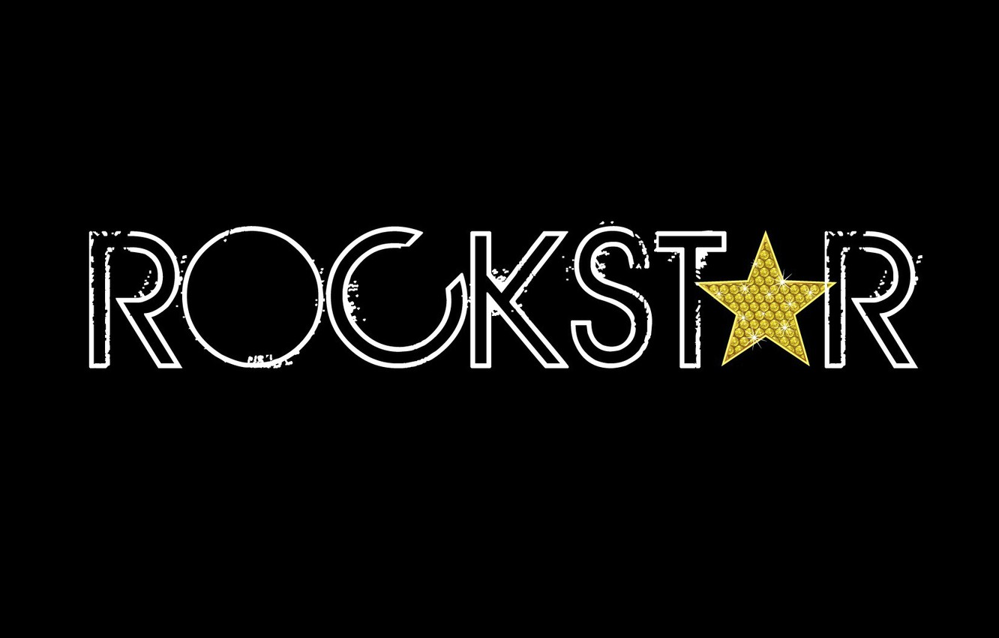

Rockstar Games
Rockstar Games — американская компания, издатель компьютерных игр. Владельцем Rockstar Games является корпорация Take-Two Interactive с использованием активов, ранее приобретенных Take-Two у BMG Interactive. Бренд компании широко известен по сериям игр Grand Theft Auto, Red Dead, Midnight Club, Max Payne и Manhunt. Главный офис компании расположен в Нью-Йорке. Многие студии в составе Take-Two Interactive были позже переименованы и стали частью Rockstar Games. Rockstar Games была создана в 1998 году Сэмом Хаузером, Дэном Хаузером, Терри Донованом, Джейми Кингом и Гэри Форменом. В феврале 2020 года Дэн Хаузер покинул студию.